Playa Paraíso: White sand, turquoise water, palm trees – Playa Paraíso lies right next to the Maya ruins of Tulum and is considered one of the most beautiful beaches in Mexico. In January the weather is perfect: around 28 degrees, hardly any rain.
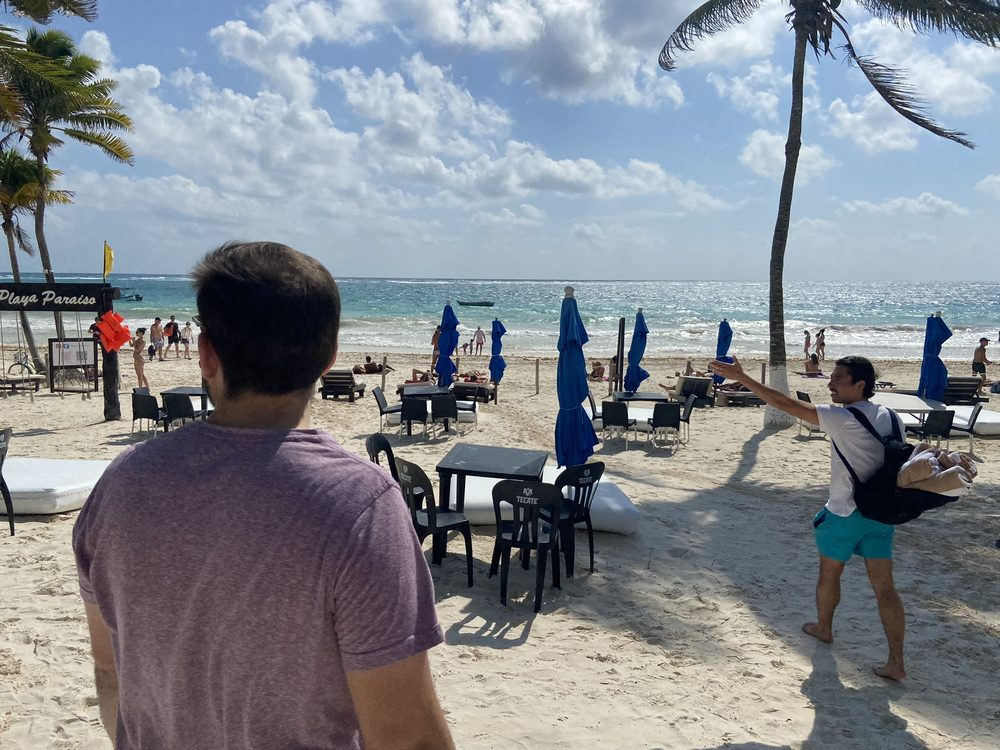
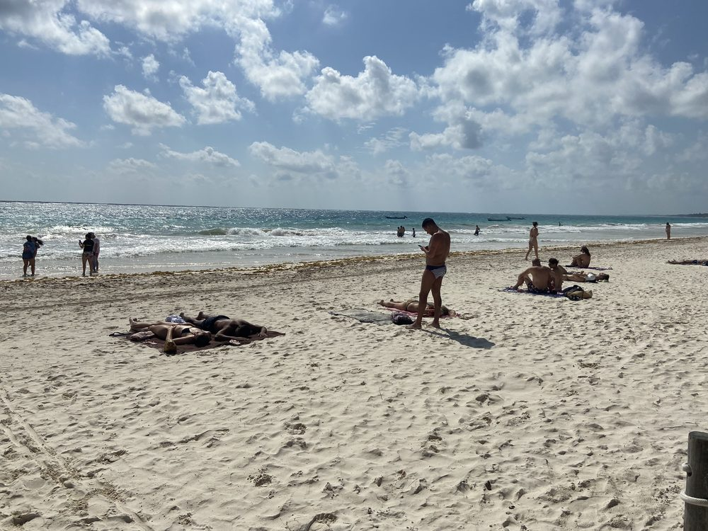
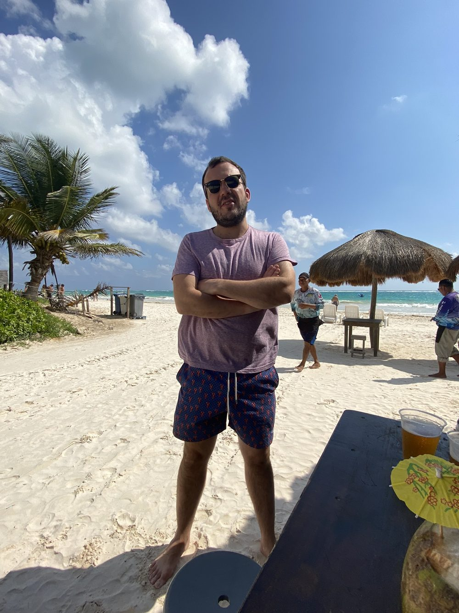
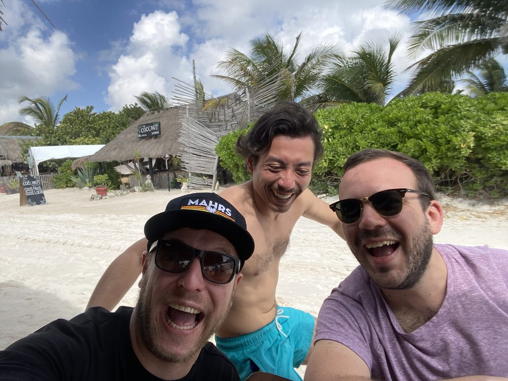
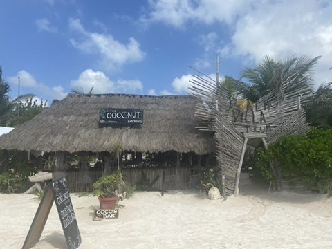
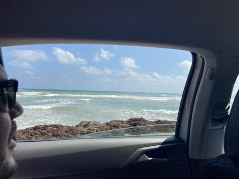
Beach club: The coast road to the south is lined with boutique hotels, restaurants and beach clubs. We end up in one of them – music, dancing, sunset. Tulum on a Saturday.
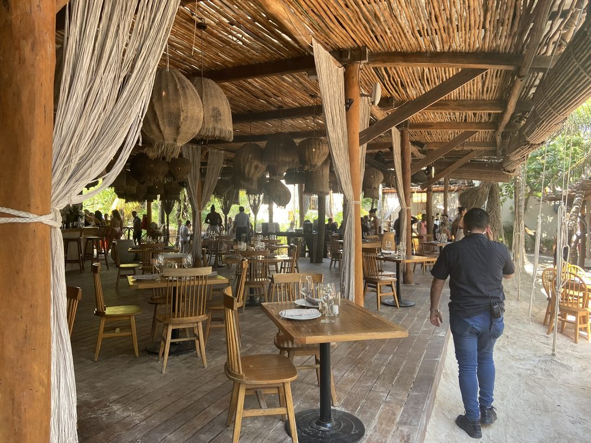
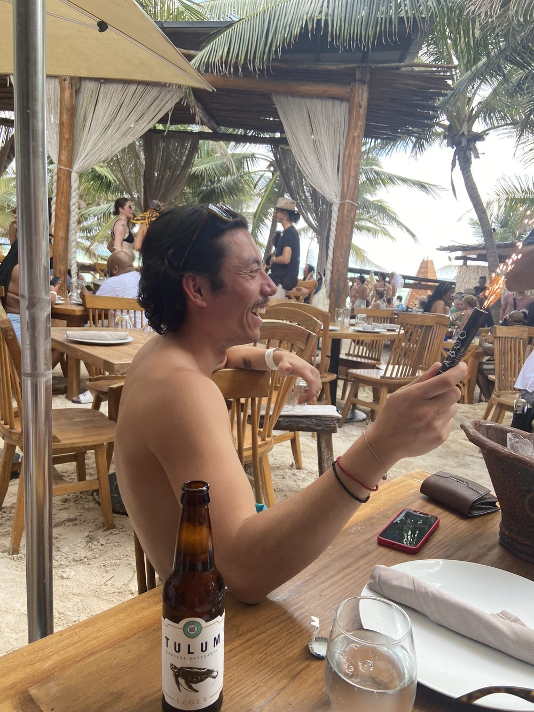
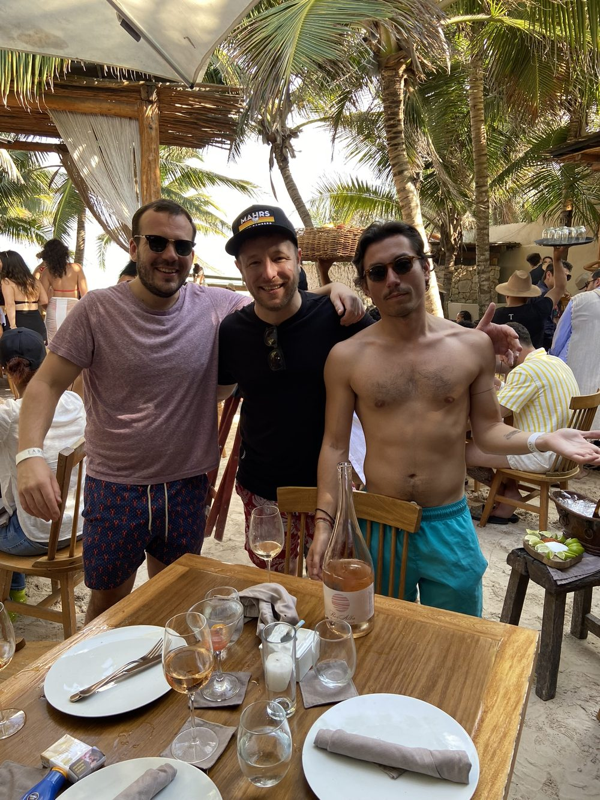
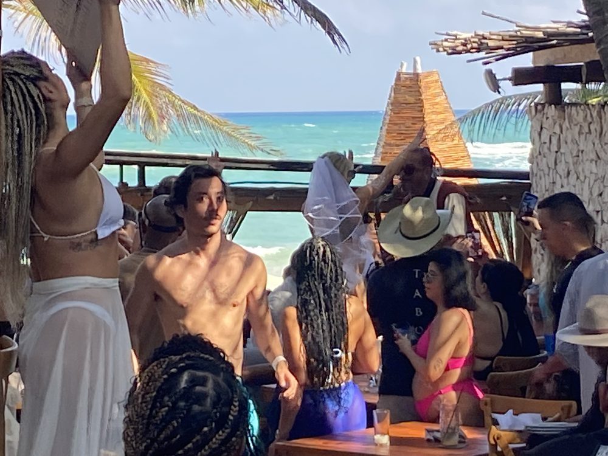
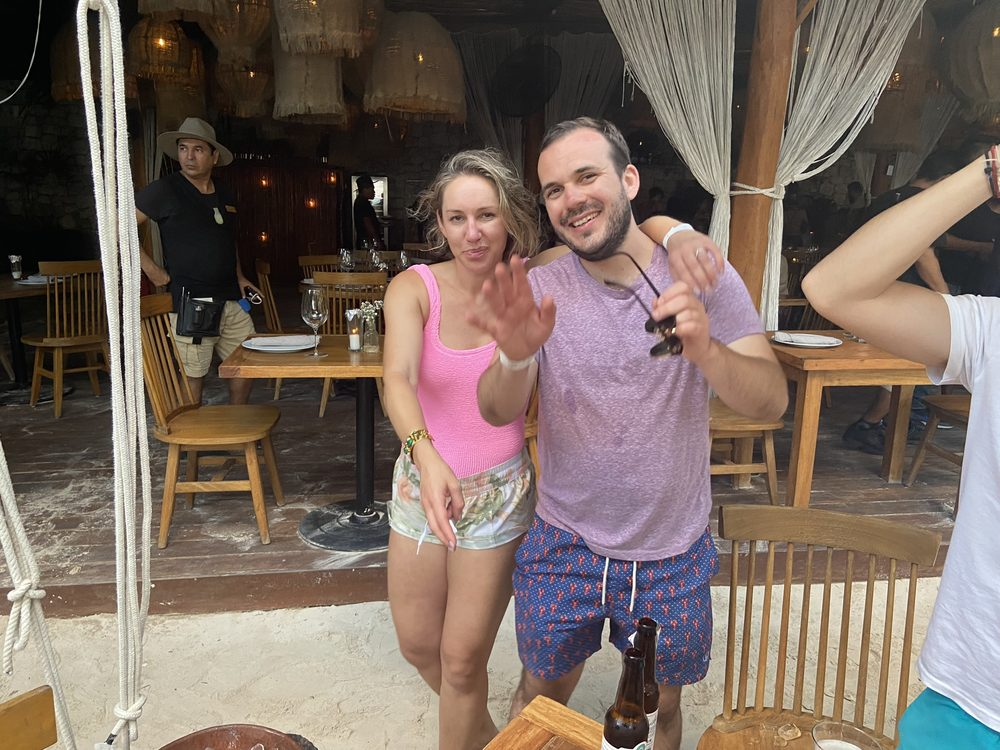